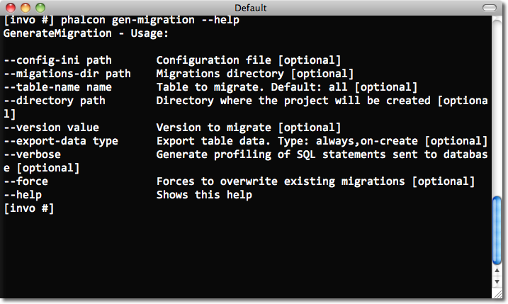

Database MigrationsMigrations are a convenient way for you to alter your database in a structured and organized manner.
Often in development we need to update changes in production environments. Some of these changes could be database modifications like new fields, new tables, removing indexes, etc. When a migration is generated a set of classes are created to describe how your database is structured at that moment. These classes can be used to synchronize the schema structure on remote databases setting your database ready to work with the new changes that your application implements. Migrations describe these transformations using plain PHP. Schema DumpingThe Phalcon Developer Tools provides scripts to manage migrations (generation, running and rollback). The available options for generating migrations are:

Running this script without any parameters will simply dump every object (tables and views) from your database in migration classes. Each migration has a version identifier associated to it. The version number allows us to identify if the migration is newer or older than the current ‘version’ of our database. Versions also inform Phalcon of the running order when executing a migration. 
When a migration is generated, instructions are displayed on the console to describe the different steps of the migration and the execution time of those statements. At the end, a migration version is generated. By default Phalcon Developer Tools use the app/migrations directory to dump the migration files. You can change the location by setting one of the parameters on the generation script. Each table in the database has its respective class generated in a separated file under a directory referring its version: Migration Class AnatomyEach file contains a unique class that extends the Phalcon\Mvc\Model\Migration These classes normally have two methods: up() and down(). Up() performs the migration, while down() rolls it back. Up() also contains the magic method morphTable(). The magic comes when it recognizes the changes needed to synchronize the actual table in the database to the description given. <?php
use Phalcon\Db\Column as Column;
use Phalcon\Db\Index as Index;
use Phalcon\Db\Reference as Reference;
class ProductsMigration_100 extends \Phalcon\Mvc\Model\Migration
{
public function up()
{
$this->morphTable(
"products",
array(
"columns" => array(
new Column(
"id",
array(
"type" => Column::TYPE_INTEGER,
"size" => 10,
"unsigned" => true,
"notNull" => true,
"autoIncrement" => true,
"first" => true,
)
),
new Column(
"product_types_id",
array(
"type" => Column::TYPE_INTEGER,
"size" => 10,
"unsigned" => true,
"notNull" => true,
"after" => "id",
)
),
new Column(
"name",
array(
"type" => Column::TYPE_VARCHAR,
"size" => 70,
"notNull" => true,
"after" => "product_types_id",
)
),
new Column(
"price",
array(
"type" => Column::TYPE_DECIMAL,
"size" => 16,
"scale" => 2,
"notNull" => true,
"after" => "name",
)
),
),
"indexes" => array(
new Index(
"PRIMARY",
array("id")
),
new Index(
"product_types_id",
array("product_types_id")
)
),
"references" => array(
new Reference(
"products_ibfk_1",
array(
"referencedSchema" => "invo",
"referencedTable" => "product_types",
"columns" => array("product_types_id"),
"referencedColumns" => array("id"),
)
)
),
"options" => array(
"TABLE_TYPE" => "BASE TABLE",
"ENGINE" => "InnoDB",
"TABLE_COLLATION" => "utf8_general_ci",
)
)
);
}
}
The class is called “ProductsMigration_100”. Suffix 100 refers to the version 1.0.0. morphTable() receives an associative array with 4 possible sections:
Defining ColumnsPhalcon\Db\Column is used to define table columns. It encapsulates a wide variety of column related features. Its constructor receives as first parameter the column name and an array describing the column. The following options are available when describing columns:
Database migrations support the following database column types:
Defining IndexesPhalcon\Db\Index defines table indexes. An index only requires that you define a name for it and a list of its columns. Note that if any index has the name PRIMARY, Phalcon will create a primary key index in that table. Defining ReferencesPhalcon\Db\Reference defines table references (also called foreign keys). The following options can be used to define a reference:
Writing MigrationsMigrations aren’t only designed to “morph” table. A migration is just a regular PHP class so you’re not limited to these functions. For example after adding a column you could write code to set the value of that column for existing records. For more details and examples of individual methods, check the database component. <?php
class ProductsMigration_100 extends \Phalcon\Mvc\Model\Migration
{
public function up()
{
//...
self::$_connection->insert(
"products",
array("Malabar spinach", 14.50),
array("name", "price")
);
}
}
Running MigrationsOnce the generated migrations are uploaded on the target server, you can easily run them as shown in the following example: 
Depending on how outdated is the database with respect to migrations, Phalcon may run multiple migration versions in the same migration process. If you specify a target version, Phalcon will run the required migrations until it reaches the specified version. |